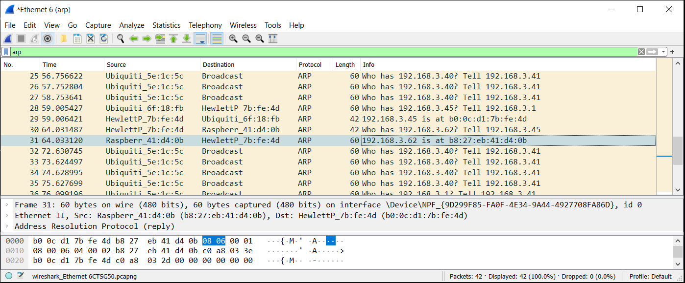
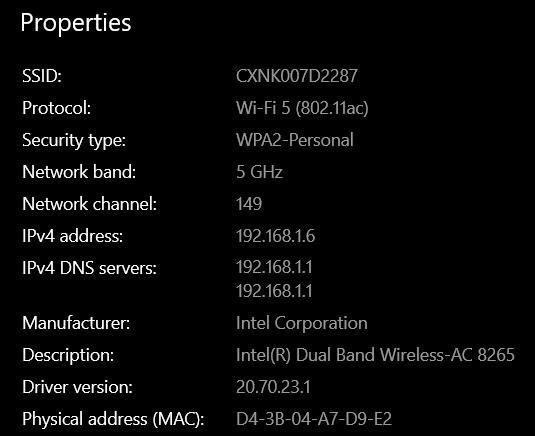
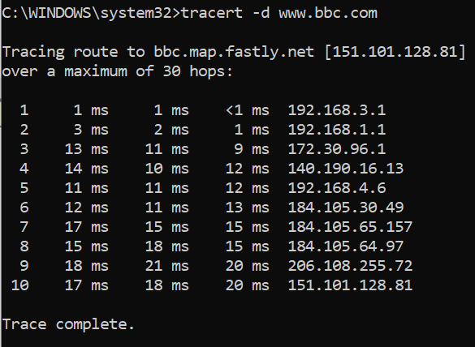
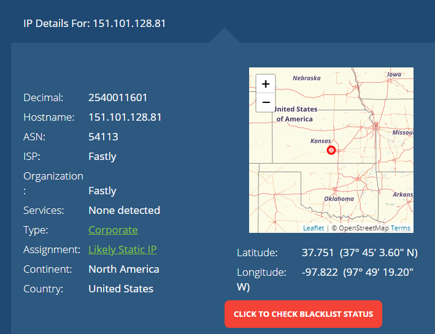
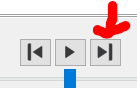
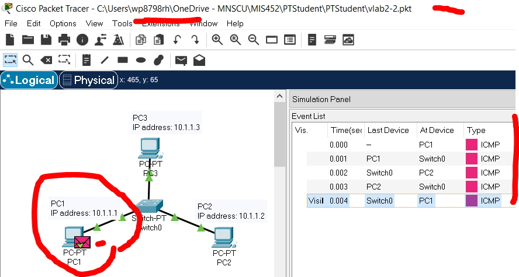
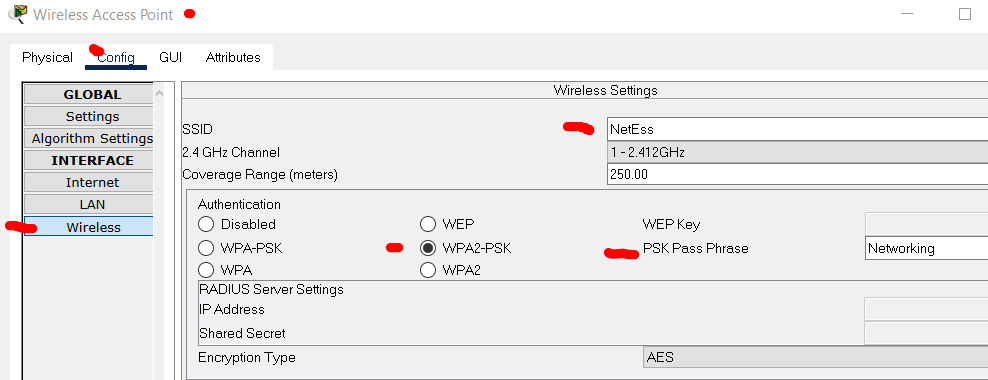
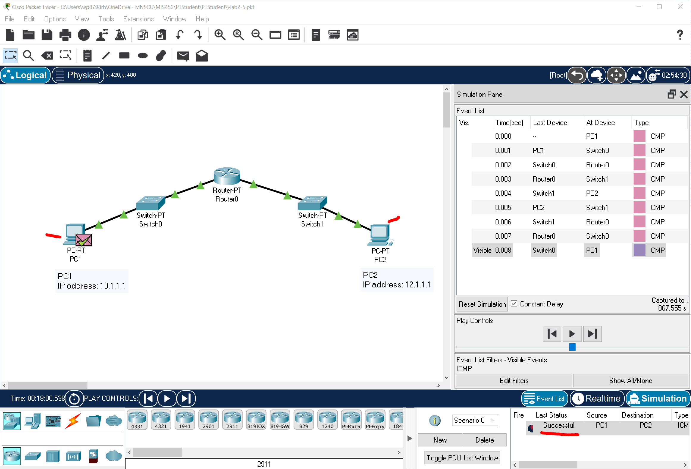

Of what value is a basic knowledge of Network Hardware? Note: do not only rely on the book for an answer. Consult LinkedIn Learning and Wikipedia, among other available resources.
(50) 1. Briefly state the value of a basic knowledge of network hardware.
Do Hands-On Project 2-2 Install WireShark 64-bit on of your laptop. Accept all default settings. After you install WireShark, start it up. Do this exercise in Somsen 301, preferably during classtime when there are other students around to work with. In step 2, enter the IPv4 address of your laptop's wired connection, and up to two other students laptops wired connection, in the spaces below. Wired IPv4 addresses are preferred, but you can use wireless.
(25) 2. Your laptop IPv4 address: (25) 3. Other laptop IPv4 address: (25) 4. Another laptop IPv4 address: (50) 5. Perform steps 3 through 10. In step 10 answer the question, what do you think the purpose of the ARP protocol is?:
(100) 6. Use the Snipping Tool to make a screen shot of your WireShark application, showing the ARP capture packets and IP addresses, similar to the screen shot below. Note that your IP addresses will be different.  Save the screen shot as "Ex1" in your ' ' folder. You will be combining screen shots from several exercises at the end of this assignment, just as you did in Formative00-PDF File Creation.
Do Hands-On Project 2-4 to connect to a wireless access point, preferably in Somsen 301 during class. But you are free to attempt this in another location. Make sure to use your WSU laptop because you have administrator access. Enter your answers to the questions in the spaces below. In follow the steps, in step 3 connect to the 'Warrior' wireless network, or another one if you prefer. Examine the Wireless Network properties, they will appear in a dialog box accessible from the Wireless network icon in the Task Tray.  Your values will be different.
(25) 7. In step 5 examine the Properties of the wireless network and enter the values for the SSID below: (25) 8. Enter the protocol: (25) 9. Enter the Security type:
In step 5 ping the router, which is probably not at 192.168.1.1 Hint, open a command window and type ipconfig /all, then press Enter. Look at the Default Gateway. (50) 10. What was the TTL value returned?: (50) 11. What would Lost Packets, or round trip times above 250ms indicate?:
ipconfig /all
Do Hands-On Project 2-6 and use Traceroute to see how packets travel through the Internet. Complete all the steps as described. (50) 12. Examine the tracert results and note any anomalies, such as long response times, in the space below. Make sure to include the website: Now try tracert www.bbc.com or tracert -d www.bbc.com which is the website for BBC news in London, England.  Your results may be slightly different. Use the website whatismyipaddress.com and find out why the last router is not located in the United Kingdom. When I did this exercise, the BBC IP address came from Kansas, which is a long way from London.  Your results may be slightly different. (100) 13. Briefly explain why/how the BBC IP address came from a different continent?
tracert www.bbc.com
tracert -d www.bbc.com
The Packet Tracer Labs are accessible from MindTap in two ways:
The files needed for Packet Tracer labs are available on the Cengage Website, in Professor Paulson's OneDrive ReadOnly folder for this course, or in the WSU network drive ReadOnly folder for this course. You must save a copy of these files to your folder.
Follow the instructions in Packet Tracer Lab 2-2 to see how a switch works. Note in steps 8 and 9 the 'Capture then Forward' icon is in the 'Simulation Panel Play Controls' to the right of the Play button. 
(50) 14. Use the Snipping Tool to make a screen shot of your completed Lab. In your screen shot make sure to include the file path with your StarID, the final packet at PC1 with a green check, and the simulation panel listing the events. Refer to the screen shot below.  Save the screen shot as "Ex2" in your ' ' folder. You will be combining screen shots from several exercises at the end of this assignment, just as you did in Formative00-PDF File Creation.
Follow the instructions in Packet Tracer Lab 2-3 to connect to a Wireless Access Point. Note that in steps 3,4 and 5 the values for SSID, Authentication and PSK Pass Phrase used to configure Laptop 1 have been preset in the Wireless Access Point. These values can be changed by clicking the Wireless Access Point, selecting Config>Wireless>and updating the values. Feel free to explore these settings, and more, once you complete this lab. 
Step 8 states 'Note that an AP acts somewhat like a hub in that all laptops receive the packet' (100) 15. Use the Snipping Tool make a screen shot representing the AP hublike behavior. This is done by repeating the steps 7 and 8 and paying close attention what occurs when you click the Capture then Forward button. Make sure your screen shot includes the Packet Tracer Title Bar with your StarId, and the appropriate icons in the simulation window.of your small network, similar to the screen in the previous exercise. Save the screen shot as "Ex3" in your ' ' folder. You will be combining screen shots from several exercises at the end of this assignment, just as you did in Formative00-PDF File Creation.
Follow the instructions in Packet Tracer Lab 2-4 to see how a router works. Complete steps 1 through 6. Display Router1 routing table, you may need to resize the dialog box and columns to see the network numbers.
(50) 16. Use the Snipping Tool to make a screen shot of the Router1 routing table. Save the screen shot as "Ex4" in your ' ' folder. You will be combining screen shots from several exercises at the end of this assignment, just as you did in Formative00-PDF File Creation.
Follow the instructions in Packet Tracer Lab 2-5 to communicate across a router. The hint states that a change is required on both PC1 and PC2. It may be advantageous to compare PC1 settings from Lab 2-4 to PC1 settings in Lab 2-5. Furthermore, once you do make changes to PC1 and PC2, make sure to click inside the network diagram box to ensure the PC1 and PC2 are not greyed out, otherwise your PDU will not be delivered. 
(150) 17. Briefly describe the configuration changes needed on PC1 and PC2 to allow communication across the router.
Use a web browser to verify that you have published your website to https://classes.winona.edu/... Check that your name, StarID, email, class, semester, section and all of your answers are correct and visible. From the menu choose File>Print... and using "Microsoft Print to PDF" save a copy of this assignment as a .pdf file in your ' ' folder.
(50) 18. Save your file 'WebPage.pdf' to the ' ' folder.
Create one .pdf (portable document format) file from the screen shots that you have taken by following these steps.
(50) 24. Save your file 'ScreenShots.pdf' to the ' ' folder.
Use PDFill to merge the WebPage.pdf file with the ScreenShots.pdf file, and save it as 'Summative02.pdf' in ' ' folder.
(50) 25. Upload your file 'Summative02.pdf' to the D2L 'Summative02' Assignment folder.
Use a browser to view your completed and published website at: https://classes.winona.edu/... Ensure that you have linked this assignment on your home page. Note that your screen shots do not have to be completed to perform this step.